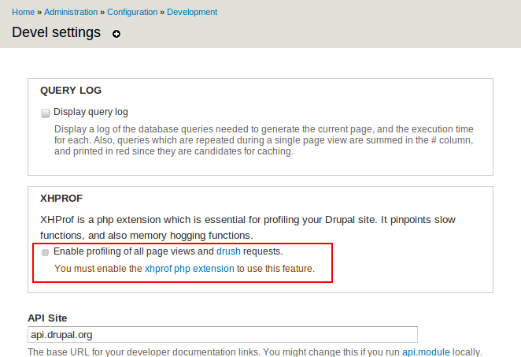
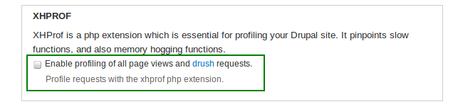
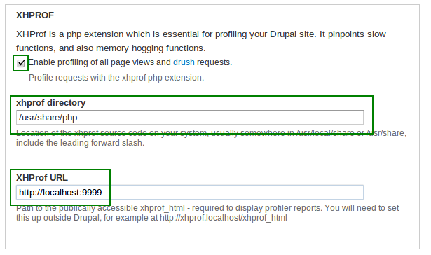
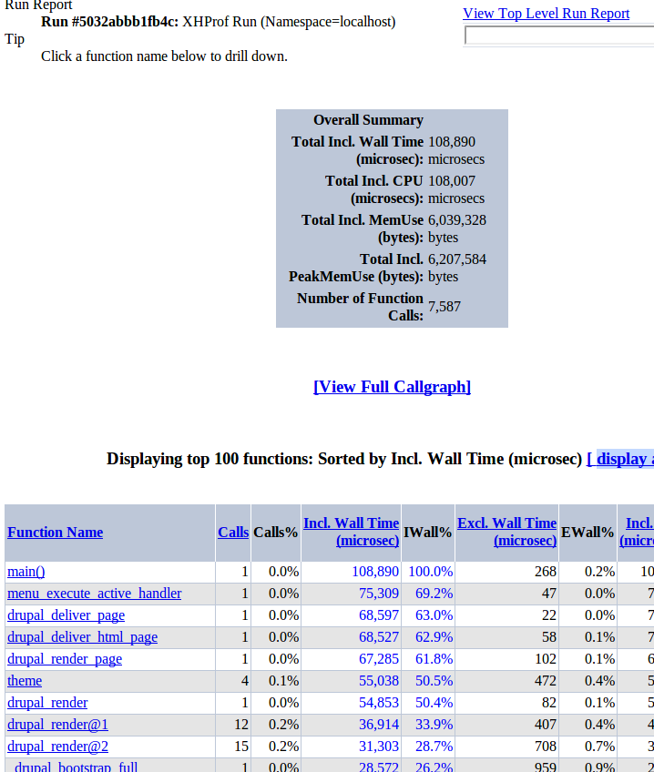
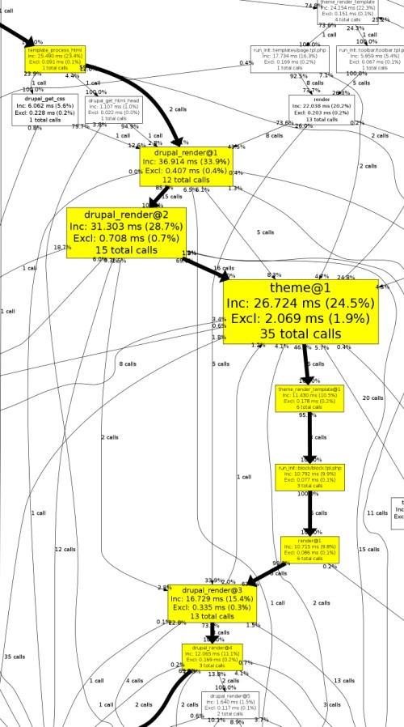

Instalar y configurar xhprof para que funcione en Drupal.
El modulo Devel nos proporciona una buena forma de integrar xhprof en nuestra instalación de drupal, y vamos a aprovecharla.
Xhprof para quien no lo conozca aun, es un profiler. Principalmente nos permite saber de forma detallada cuanta ram, cpu y tiempo han consumido cada una de las funciones que se utilizan en un request.
De esta forma podemos centrarnos en las funciones mas conflictivas y resolver sus cuellos de botella.
Si se van a la configuración de Devel podemos ver que la opción esta deshabilitada

Y es solo porque no tenemos xhprof instalado, asi que manos a la obra:
NOTA: Los pasos de instalación los hice en D7 sobre Ubuntu, pero son compatibles con cualquier *nix siempre que se adapten las rutas de las carpetas a las que utilicé el SO sobre el que quieras instalarlo.
Primero instalemos xhprof desde su código fuente. con la consola en mano te vas a tu home (por decir algún lado) y lanzamos:
|
1 2 3 4 5 6 7 |
wget http://pecl.php.net/get/xhprof-0.9.2.tgz tar xvf xhprof-0.9.2.tgz cd ./xhprof-0.9.2/extension/ phpize ./configure --with-php-config=/usr/bin/php-config make make install |
Configuremos PHP para que use xhprof:
|
1 |
nano /etc/php5/conf.d/xhprof.ini |
Y pegar esto dentro:
|
1 2 |
extension=xhprof.so xhprof.output_dir="/var/tmp/xhprof" |
Listo, ya tenemos instalado xhprof.
Ahora creemos el directorio en el que se van a generar los dump (cada request genera un archivo de dump con toda la informacion registrada):
|
1 2 |
mkdir -p /var/tmp/xhprof chown www-data. /var/tmp/xhprof |
Bien, ahora dentro de la carpeta que contiene el codigo fuente que usamos hace un momento para hacer la instalacion, tenemos que copiar las carpetas “xhprof_html” y “xhprof_lib” en “/usr/share/php/“:
|
1 2 |
cp -Pr xhprof_html/* /usr/share/php/xhprof_html/ cp -Pr xhprof_lib/* /usr/share/php/xhprof_lib/ |
Xhprof genera graficos que son de mucha ayuda a la hora de identificar cuellos de botella y para crearlos utiliza las capacidades del programa graphviz. si no lo tenés instalado poder hacerlo lanzando:
|
1 |
apt-get install graphviz |
Ok terminamos con la configuracion de xhprof. configuremos el resto del entorno para que pueda hacer uso de el.
Lo siguiente es crear un vhost para poder acceder a la informacion que genere xhprof:
|
1 |
nano /etc/apache2/sites-available/xhprof |
Y pegas esto:
|
1 2 3 4 5 |
DocumentRoot /usr/share/php/xhprof_html DirectoryIndex index.php AllowOverRide all Options FollowSymLinks |
Nuestro vhost corre en el puerto 9999 asi que tenemos que agregarlo a apache:
[console]nano /etc/apache2/ports.conf[/console]
debajo de “Listen 80” agrega:
|
1 |
Listen 9999 |
Estamos por teninar. Habilita el vhost que hemos creado con el comando “a2ensite xhprof“, reinicia apache con “service apache2 restart” y en nuestra instalación de Drupal 7 vayamos a “admin/config/development/devel” para configurarlo:
Ahora ves que ya podes marcar la opcion “Enable profiling of all page views and drush requests.”

Cuando la marques vas a tener que rellenar:
“xhprof directory:” ponele “/usr/share/php” (sin comillas)
“XHProf URL:” ponele “http://localhost:9999” (sin comillas)

Y listo. ya lo tenes integrado en drupal. si miras en la parte inferior izquierda de cualquier pagina de la instalación de tu drupal vas a ver que aparece un link llamado “XHProf output“ que te va a llevar a la pagina informativa del perfilado que se hizo.


Bonus!:
Nota: solo por cuestiones de mantenimiento te comento que los dump que genera xhprof en la carpeta “/var/tmp/xhprof” tienden a comerse el disco en cuestion de dias. la solucion que uso es lanzar un cron que limpia todos los dump que tengan mas de un dia.
El cron es un archivo con permisos de ejecucion y el siguiente contenido
|
1 2 3 |
#!/bin/bash #Elimina todos los perfilados que tengan mas de 1 día find /var/tmp/xhprof -type f -mtime +1 -exec rm -f {} ; |
Guardalo en /etc/cron.daily/xhprof_cleaner.sh y listo.
Una nota final. La configuracion que explique no tiene en cuenta la seguridad. esto quiere decir que no deberias utilizarla en produccion salvo que sepas lo que haces.


Excelente tutorial. Imperdonable no haber instalado esto antes. Saludos Crack!!!!
Sr,
es usted de lo mejor que hay.
+=100 para vos
Genial explicación, paso a paso.
Muchas gracias por compartirlo.
A la hora de crear el vhost he tenido que poner
sino no lo agarra.
ahora luego se configurar el módulo Devel me sale una página que dice: La conexión ha sido reiniciada
cuando trato de entrar al sitio por la url colocando localhost/drupal_ini me redirecciona para http://www.localhost.com/drupal_ini que por supuesto no existe pues tengo el sistema local.
¿alguna idea de que pudiera ser?
Excelente 🙂
Una contribución, la última versión “estable” (aunque sean todas betas) hasta la fecha de este comentario es: http://pecl.php.net/get/xhprof-0.9.4.tgz
Y si te gusta la aventura podes clonarte el repo que esta mucho más actualizado: https://github.com/phacility/xhprof
Y por último, indicar que casi todos los comandos necesitan ser ejecutados con un usuario con permisos (sudo).
Graciela!
Y un tema muy importante, asegurarse que la carpeta donde se escribirán los logs /var/tmp/xhprof tengan permisos de escritura.